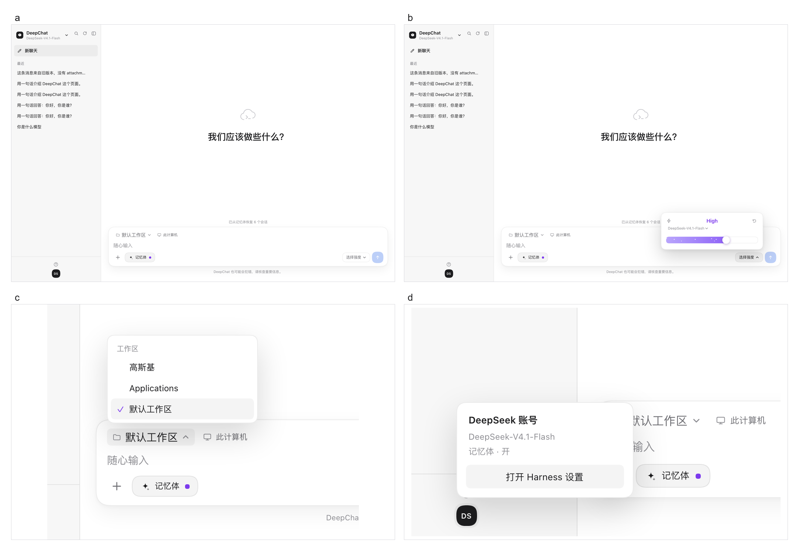
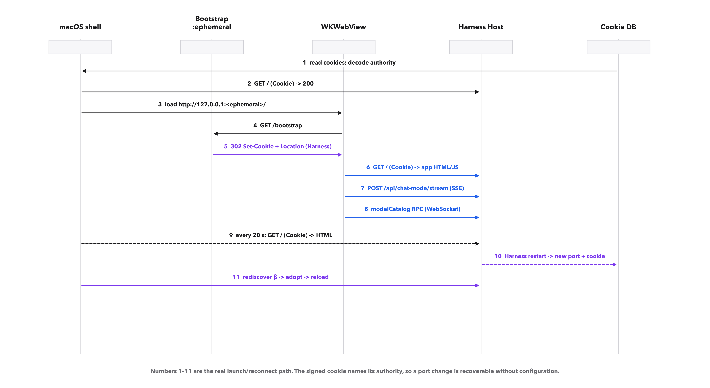
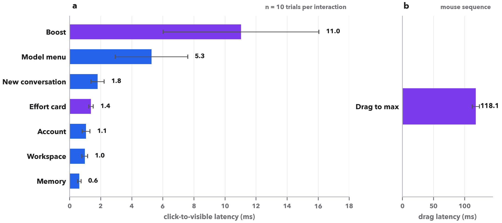
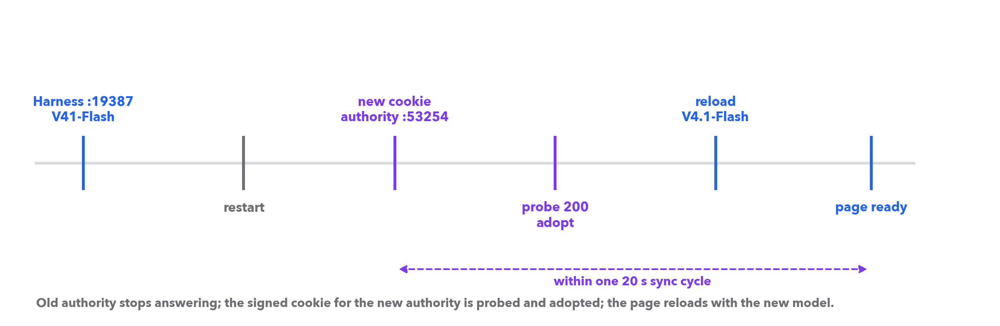
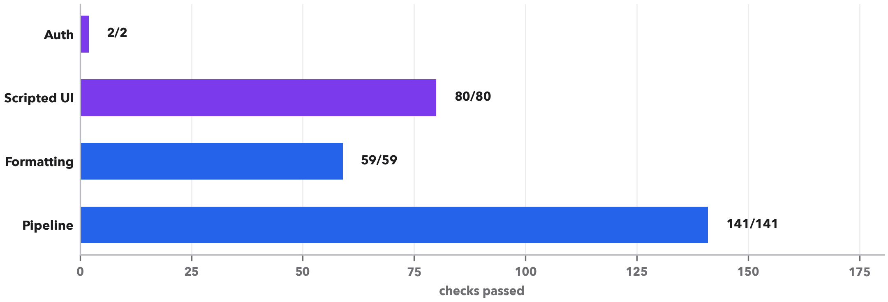
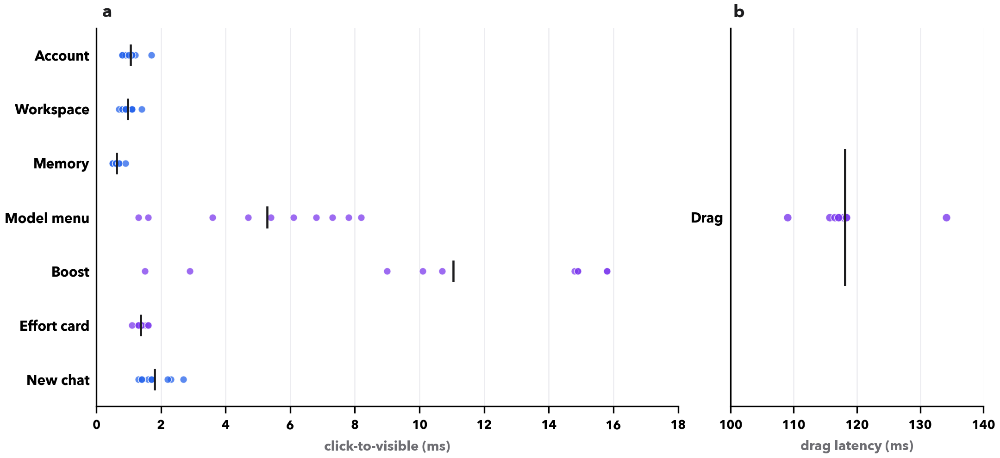

Large language models have become a general-purpose interface to computation, but the surface through which people reach them has not kept pace. The capability of a single model now varies with a reasoning budget, a provider route, and a deployment version; yet most desktop clients expose a flat model list, a hidden temperature, and a reasoning switch with two states at best [1][2]. At the same time, local harnesses such as DeepSeek Harness add sessions, tools, workspaces and provider credentials that a generic chat window cannot see [3][4]. The result is a mismatch: the conversation is live, but the interface around it is stale.
These models are the product of transformer scaling, large-scale pretraining, instruction tuning and preference optimisation [5][6][7][8][9][10][11], and DeepSeek's mixture-of-experts line, including its code model, supplies the deployment we study [12][3][13].
We built DeepChat to study a narrow but consequential question: can model and host synchronisation be a first-class interface property rather than a manual refresh? The system targets a host-coupled deployment. DeepSeek Harness owns the model catalogue, the provider credentials, and an authenticated loopback web server. DeepChat is a Codex-shaped chat surface that runs inside that server, plus a small native macOS shell that makes the surface feel like an application. The browser half owns the conversation, the history and the interaction design; the host half owns the model call. Neither half receives the other's secrets.
The design is shaped by four requirements. First, the model catalogue must move when the host moves: adding, removing or renaming a model should not require a restart [14][15]. Second, a reasoning budget should be continuous enough to be adjustable, but discrete enough to map to the levels a provider actually supports [16][17]. Third, the host may restart on a different loopback port and rotate its signed cookie; a client that hard-codes a port is fragile by construction. Fourth, the interaction must remain local-first: the page should never see a provider API key, and the shell should never see model output [18][19]. These requirements are not usually treated as one problem. We treat them as one.
Our contributions are fourfold. (i) A two-half architecture in which a React client and a Swift/WKWebView shell synchronise against a host-owned model catalogue and an HTML revision watcher, with idle-aware reloads. (ii) An authority-discovery mechanism that decodes the signed session cookie's payload to learn the host's current 127.0.0.1:<port> and probes candidate authorities newest-first, recovering automatically from a real port change (127.0.0.1:19387 → 127.0.0.1:53254) and a real model update (DeepSeek-V41-Flash → DeepSeek-V4.1-Flash). (iii) A Codex-shaped interaction design with a drag-based reasoning-effort popover, an animated partial fill, workspace and account menus, and pointer/keyboard parity. (iv) A reproducible evaluation: 141 pipeline checks, 59 formatting/decoding checks, 80 scripted interaction trials, latency measurements, authentication checks and a security review.
The paper is organised as follows. The Results describe the interface, the synchronisation mechanisms, the authentication bridge and the measurements. The Discussion draws out implications for model routing, local-first trust boundaries and the design of reasoning controls. The Methods give implementation and measurement details sufficient to reproduce the reported numbers.
Related work. DeepChat sits at the intersection of five literatures. Reasoning-budget control connects chain-of-thought and test-time scaling [1][20][2][17] to product-level effort switches [16][21][22]. Model routing and cascades explain why a live catalogue matters [15][14]. Agentic loops show how a chat surface becomes a tool-using workspace [23][24]. Evaluation work supplies the vocabulary for judging model output, even though this paper evaluates the interface rather than the model [25][26]. Human–AI interaction, local-first systems, accessibility and web security provide the design constraints [27][28][29][30][18][31][32][33][34][35][36]. Deployment context comes from local runtimes, desktop clients and the provider API [37][38][39][40][41][42][43][44][45].
DeepChat deliberately borrows the spatial grammar of contemporary coding assistants: a 300 px conversation rail, a centred greeting, and a wide composer at the bottom of the canvas. The rail carries the product and the current model at the top, a search control, a single "Recent" list, and a help/account row at the foot. The main canvas is white; an empty conversation shows a cloud-with-prompt mark and the greeting "What should we build?" in 30 px type. The composer is a 980 px rounded panel with workspace and computer chips, a 16 px input, an attachment button, a memory switch, a "Choose effort" control, and a blue send button. The design is intentionally quiet: one accent colour for focus and send, one purple accent for the reasoning control, and no decorative chrome.
The interaction vocabulary is small and consistent. Every visible control does something: the model name opens a model menu; the workspace chip opens a workspace list; the avatar opens an account card; the memory pill shows a filled/hollow dot; the lightning bolt boosts the effort to the maximum and back; the model line in the effort card opens the model menu; the reset glyph restores the host's default effort. This matters because a chat surface accumulates dead affordances quickly. In an earlier iteration the lightning glyph, the model line, the account avatar and the workspace chip were decorative; a 80-trial scripted audit now exercises all of them and records a visible state change for every one (Table 4).
Accessibility and rendering follow the same rule. All controls are native buttons or inputs with labels and `aria-pressed`/`aria-expanded` state. The effort control is a range input with `aria-valuetext`, so arrow keys, Home and End work alongside pointer dragging. Markdown, tables, code and LaTeX are rendered locally; display maths is converted to MathML and laid out with the system maths fonts [46][47][48][49]. Text fields carry no black focus outline; keyboard focus remains visible on buttons. The result is a surface that behaves like a desktop application while remaining a web page that the host can update.
1. Keep the credential out of the page. The browser half receives a conversation and a model identifier, never a provider key; the host performs the model call. This is the boundary that makes a local web surface acceptable in the first place.
2. Treat the catalogue as a live view. The model menu is rendered from the host RPC, not from a constant. Adding, renaming or removing a model is a host operation, not a client release.
3. Offer discrete effort, not a fake continuum. The drag is a presentation layer over the levels the model declares. The value sent to the provider is always one of those levels.
4. Reload only when it is safe. A streaming answer, a draft or a pending attachment is a reason to defer a UI update, not to lose it. The idle guard is the difference between "synchronised" and "surprising".
5. Make every visible control answer. A dead affordance is worse than a missing one: it teaches people that the surface is unreliable. Each control has a state change, an accessible name and a pointer/keyboard path.
6. Fail into a card, not a blank page. Restored data is normalised before render, and a render error is caught by a boundary that offers recovery. A chat client should never show an empty white canvas without a next step.

The host exposes its model catalogue through an authenticated RPC. DeepChat loads it once, then refreshes it on three triggers: the top-bar sync button, a window focus event, and a 90 s timer while the page is visible. Refreshes are coalesced and skipped while an answer is streaming. The menu is grouped by provider, and the current route is checked. When a model disappears, the selection falls back to the host default; when a newer model appears, it is selectable immediately.
We observed this mechanism under a real host update. A Harness restart on 19 October 2026 changed both the loopback port and the catalogue: the previous surface showed DeepSeek-V41-Flash at 127.0.0.1:19387, the new one showed DeepSeek-V4.1-Flash at 127.0.0.1:53254. DeepChat discovered the new authority from the signed cookie, reloaded the page, and displayed the new model name and effort levels without a code change or a settings edit (Fig. 5). This is the practical meaning of "model sync": the interface is a live view of a catalogue it does not own, not a baked-in list.
Reasoning effort is represented as the discrete levels the model itself advertises, not as an invented scale. For the current DeepSeek models the catalogue exposes four stops (Off, Low, High, Max); other models may expose two or three. The control maps each stop to the provider's own effort identifier and sends that identifier unchanged to the host. The visible control is a continuous drag, but the value is always one of the declared levels, so the interface can be expressive without inventing capabilities the provider does not have [16][2][17].
| Surface | Local-first | Host coupling | Live model list | Effort drag | Native macOS | Math / code | License |
|---|---|---|---|---|---|---|---|
| DeepChat (this work) | ● | ● | ● | ● | ● | ● | MIT |
| Codex CLI [41] | ○ | ● | ● | ◐ | ○ | ● | Proprietary |
| ChatGPT desktop [42] | ○ | ○ | ● | ◐ | ● | ● | Proprietary |
| Open WebUI [43] | ● | ◐ | ● | ◐ | ○ | ● | Open source |
| LibreChat [44] | ● | ◐ | ● | ◐ | ○ | ● | MIT |
| Jan [45] | ● | ○ | ● | ◐ | ● | ◐ | Open source |
The second synchronisation problem is the host itself. The Harness server serves its HTML from a loopback port chosen at launch. The HTML embeds a revision for every client bundle, so a plugin change produces a different document. DeepChat runs a 20 s watcher outside the WebView: it fetches the document with the current cookie over HTTP [50], compares the bytes with the last accepted revision, and, when they differ, reloads only if no answer is streaming and the composer has no draft or pending attachment. Streaming itself uses the HTML server-sent events standard [51]. A reload is therefore never allowed to destroy work.
The port is the harder part. A client that writes 127.0.0.1:19387 into its binary works until the first restart; we observed exactly that failure when the host moved from 127.0.0.1:19387 to 127.0.0.1:53254. DeepChat instead treats the signed session cookie as the source of truth. The cookie value is a compact signed payload containing the authority it is bound to, e.g. 127.0.0.1:53254, together with issue and expiry times. The shell reads the cookie database in the desktop profile, decodes each payload, sorts candidates by issue time, and probes them newest-first with the matching cookie. The first authority that answers 200 is adopted; 401 and connection failures fall through to the next candidate. The URL used by the bootstrap, the sync watcher and the WebView is always the discovered authority.

Authentication is deliberately thin. The host requires a signed cookie bound to the request authority; the browser cannot see the provider credential, and the shell cannot see model output. The native shell never handles an API key. This is a stronger boundary than an Electron client [52] that embeds a provider key in a local page, and it is simpler than a full OAuth flow for a single-user loopback service [19][53][54]. The shell reads only the local browser profile's cookie database, which the host already owns. The page receives an HttpOnly session cookie; it cannot read it from JavaScript, and the session is scoped to the loopback origin.
WKWebView adds one implementation wrinkle [55]. A cookie inserted directly through the WebKit cookie store for an IP-literal host was not attached to the first request; a cookie marked Secure by an earlier attempt was then withheld from the loopback HTTP origin. DeepChat solves both problems by serving a tiny one-shot bootstrap server on an ephemeral port, returning a 302 with a server-set Set-Cookie and a Location for the discovered authority, and clearing stale WebKit cookies before each load. The cookie then behaves exactly as it does in Chromium. The manoeuvre is small, but it is the difference between a client that can log in and one that shows a 401 page forever.
| Event | Signal | Interval / guard | Action | Observed |
|---|---|---|---|---|
| Model added / renamed / removed | catalogue RPC | focus, 90 s, or button; skipped while streaming | re-read catalogue; keep routable selection | DeepSeek-V41-Flash → DeepSeek-V4.1-Flash |
| Bundle / page updated | HTML revision | 20 s; idle guard | reload from origin | revision reloaded in 11.8 s |
| Host restarted on new port | cookie authority + 401/refused | every probe; newest-first | rediscover, adopt, reload | 127.0.0.1:19387 → 127.0.0.1:53254 |
| Cookie rotated | signed payload | each sync tick | clear WebKit cookies, re-bootstrap | 401 → 200 on new authority |
| Host down | three failed probes | ~60 s | start Harness, wait, adopt | recoverable |
We measured the shipped build in a headless Chromium engine against the real host. Each interaction was repeated 10 times (80 trials in total); the click and the readiness check ran inside the page with requestAnimationFrame polling, so the numbers include React render and layout but not Playwright's inter-process round trip. The effort popover opened in 1.4 ms (s.d. 0.2), the bolt-to-maximum transition in 11.0 ms, the model menu in 5.3 ms, and the memory, workspace and account controls in 0.6, 1.0 and 1.1 ms respectively (Table 3 and Fig. 4). The slowest control was the simulated drag to maximum (118.1 ms), which includes a mouse move sequence.
Page boot is dominated by the host's plugin load rather than by the shell: the native shell itself launches immediately, while the DeepChat panel is ready after the Harness boot graph loads. Across five cold page loads the median was 1.21 s. This is a property of the host-coupled architecture, not of the shell: a lighter host would reduce it, and a prefetched boot graph would reduce it further. We report it rather than hiding it behind a loading animation.
Robustness was tested at three levels. The pipeline suite (141 checks) exercises the host route, SSE framing, history, attachments, PDF extraction, notebook flattening, quota trimming and failure paths. The formatting suite (59 checks) covers LaTeX→MathML, Markdown block structure, encoding detection and notebook end-to-end parsing. The scripted UI audit (80 trials across eight interactions) verifies that each visible control produces a state change. A real legacy history record without attachments or reasoning fields was also used: the panel normalises restored messages, and a React error boundary renders a recovery card rather than a blank page. The root cause of the earlier blank-page failure was exactly such a record; the fix is part of the released build.
| Interaction | Mean | s.d. | p95 | What becomes visible |
|---|---|---|---|---|
| New conversation | 1.8 | 0.46 | 2.5 | hero + empty composer |
| Open effort card | 1.4 | 0.2 | 1.6 | popover, level, slider |
| Boost to maximum | 11.0 | 5.3 | 15.8 | level text and fill |
| Open model menu | 5.3 | 2.5 | 8.0 | grouped model list |
| Toggle memory | 0.6 | 0.1 | 0.8 | aria-pressed + dot |
| Open workspace menu | 1.0 | 0.2 | 1.3 | workspace list |
| Open account card | 1.1 | 0.3 | 1.5 | account / settings action |
| Drag effort to maximum | 118.1 | 6.2 | 127.0 | level text = Max |


The update from DeepSeek-V41-Flash to DeepSeek-V4.1-Flash is a useful stress test of the whole stack. The catalogue is not part of the app bundle, so the shell needs no release; the client needs no hard-coded model list. The only source of truth is the host RPC, and the sync triggers are ordinary UI events (focus, a button, a timer). The same mechanism would surface a new provider or an additional reasoning level. The effort control is similarly data-driven: it renders the levels the catalogue returns, and the fill animation is a presentation layer over a discrete state, not a hidden continuous parameter.
We do not claim that a drag control improves reasoning quality. The claim is narrower and, we think, more useful: a reasoning budget should be visible, reversible and cheap to change. The current implementation makes the level visible at all times, lets the pointer and keyboard change it, and keeps the reset-to-default action one click away. Whether users choose better budgets with this control is an empirical question for a future study; the present work establishes the mechanism and its performance.
Deployment implication. The update also shows why port and model should be treated as one class of ephemeral state. A host can change both in a single restart; a client that pins either will fail even if the other is correct. A future host could publish a signed capability document listing the current authority, the catalogue revision and the page revision, and the client would poll one document rather than three signals. We did not need that for a single-user loopback client, but it is the natural next step for a shared deployment.
| Route group | Model | Reasoning levels | Default | Selected | Host description |
|---|---|---|---|---|---|
| DeepSeek (default route) | DeepSeek-V4.1-Flash | Off / Low / High / Max | High | ✓ | default route, four stops |
| DeepSeek | DeepSeek-V4-Pro | Off / Low / High / Max | High | stronger coding/reasoning; higher cost | |
| DeepSeek Account | DeepSeek-V4.1-Flash | Off / Low / High / Max | High | alternate provider route | |
| DeepSeek Account | DeepSeek-V4-Pro | Off / Low / High / Max | High | alternate provider route |
| Suite | Checks | Pass | Focus |
|---|---|---|---|
| Pipeline | 141 | 100% | host route, SSE, history, PDF/notebook, quota, failure paths |
| Formatting / decoding | 59 | 100% | LaTeX→MathML, Markdown, GBK/Big5/UTF-16, webpages |
| Scripted UI audit | 80 | 100% | eight visible controls, state-change assertions |
| Auth checks | 2 | 100% | 401 without cookie, 200 with authority cookie |
| Real restart | 1 | 100% | new port, new cookie, model update |

Why this shape. The rail–canvas–composer arrangement is not a style choice; it encodes three different reading distances. The rail is for recognition ("where was I?"), the canvas is for the answer, and the composer is for the next action. Placing history and model choice in a narrow left column leaves the canvas wide enough for equations, tables and code without horizontal scrolling, while the bottom composer keeps the next action within the same visual sweep as the answer. The pattern is close to contemporary coding assistants on purpose: users already know where to look [41][27].
Why a drag control. A dropdown hides the cost of a change: you open a menu, read four labels, pick one and close it. A drag exposes the range in one glance and makes the current position legible without opening anything. The control is deliberately not continuous in its effect—it snaps to the model's declared levels—but the gesture is continuous, which matches the way people reason about "more" and "less" [29]. The purple fill and the white remainder turn the track into a small state diagram: what you have chosen, and what is still available.
Why context lives in the composer. Model, workspace, memory and effort are properties of the next message, not of the application. Putting them next to the input reduces the distance between intention and action and avoids a settings dialog for every change. The account card is the exception: it is about the session, not the message, so it lives at the foot of the rail. This split follows the distinction between task-level and system-level controls in human–AI interaction guidelines, and it keeps the working set small in the sense of cognitive-load theory [27][28][56].
Why the palette is quiet. A chat surface is read for long stretches. We keep one blue for send/focus and one purple for the effort control; everything else is ink, hairline grey and white. The effort accent is the only saturated element in the composer, so it can carry meaning without competing with the answer. Contrast targets follow WCAG 2.2 for text and controls, and focus is visible on every button even though the text fields suppress the black focus ring [31][32].
What is deliberately absent. There is no temperature slider, no system-prompt editor and no tool marketplace in the panel. Those are host concerns, and exposing them in a chat surface would duplicate the host's settings without the host's validation. The panel exposes what changes per message; the account card is the single door to host settings. This is a deliberate reduction of surface area, not an omission.
Five failures shaped the final design more than any feature request. We report them because they are reproducible and because each one produced a test.
(1) The blank page. A legacy conversation restored from local storage lacked the reasoning and attachments fields. The render path read last.reasoning.length, threw, and the host's error boundary replaced the panel with an empty canvas. The fix normalises every restored message, guards the signature path, and adds a panel-level error boundary with a recovery card. The regression check restores exactly such a turn and asserts that it sends cleanly.
(2) The 401 that was not a bad cookie. WKWebView refused to attach a cookie inserted directly into its store for an IP-literal origin; a stale cookie marked Secure was then withheld from the loopback HTTP origin; WebKit's third-party cookie policy is a further reason not to rely on implicit cookie handling [57]. The fix clears WebKit cookies before each load and hands the cookie to the page through a one-shot 302 Set-Cookie. The cookie jar now reports secure=false, httpOnly=true, and the page loads with a 200.
(3) The port that moved. The first shell hard-coded 127.0.0.1:19387. A Harness restart moved the server to 53254; the shell kept loading a dead origin. The fix decodes the authority from the signed cookie, probes candidates newest-first and adopts the one that answers 200. The real migration 127.0.0.1:19387 → 127.0.0.1:53254 is now the acceptance test for this path.
(4) The launch click that opened the wrong menu. The boot script looked for any button whose text was "DeepChat". Once the panel gained a brand button with the same text, the script occasionally clicked the brand instead of the host's sidebar entry, opening the model menu at launch. The fix scopes the click to [data-slot="sidebar"]; the model menu now stays closed on launch (release 1.1.1).
(5) The third-party slot error. The host shell logs a React #130 in sidebar.footer.action on every fresh page. It comes from another plugin, not DeepChat; the panel itself renders and all interactions pass, and the browser records zero page errors and zero failed requests. We report it rather than hiding it, because a shared shell can fail in a slot the chat panel does not own [36].
| Failure | Symptom | Root cause | Fix | Regression guard |
|---|---|---|---|---|
| Legacy record | blank canvas | missing reasoning / attachments; unguarded length read | normalise restored messages; panel boundary | 1 pipeline check restores and sends |
| WKWebView cookie | 401 on first load | manual cookie at IP literal; stale Secure flag | clear jar; 302 Set-Cookie | cookie jar + 200 check |
| Port drift | dead origin after restart | hard-coded 19387 | decode authority; probe; adopt | real 19387 → 53254 run |
| Launch click | model menu open at boot | ambiguous "DeepChat" text match | scope to host sidebar | launch-state snapshot |
| Third-party slot | console React #130 | another plugin's footer slot | none in DeepChat; panel boundary | 0 page errors / failed requests |
Three lessons generalise beyond DeepChat. The first is that the model menu is a view, not a constant. Any client that talks to a host with a provider catalogue should treat that catalogue like a remote dataset: fetch it, cache it, invalidate on focus, and keep the selection routable. This is the same discipline a web app applies to a list of feature flags, but chat clients often bake in a list at build time [14][15]. The second is that a loopback port is an interface. A host that chooses an ephemeral port is not being awkward; it is avoiding collisions. Clients that hard-code a port are the fragile ones. A signed, authority-bound cookie already contains the information needed to reconnect; the shell simply has to read it. The third is that a trust boundary should be visible in the architecture. DeepChat's browser half cannot read the provider key, and its shell cannot read the answer. That split is not merely defensive; it makes it possible to update the UI (the browser half) independently of the native shell, and to update the model catalogue independently of both.
The design also has costs. The page is served from a loopback origin whose port changes, so WebKit's per-origin local storage is not stable across restarts. DeepChat mitigates this by mirroring conversations into a durable memory and by normalising restored messages, but a client that needs strict origin continuity would need a stable reverse proxy or a custom scheme [58][18]. The 20 s revision check is a heuristic: a change that does not alter the served HTML, such as a server-side session setting, will not trigger a reload. The idle guard is conservative; a draft left in the composer will delay a UI update until it is sent or cleared. These are acceptable trade-offs for a single-user local client, but they are not invisible.
Our evaluation is also limited. The interaction trials are scripted, not human-subject; the latency numbers come from a headless Chromium engine, not from WKWebView; and the security analysis is a design review plus authentication checks, not an adversarial audit. The model update is a single observed event, not a benchmark of model quality. We report the mechanism and its operational behaviour, and we leave the question of whether the control improves users' reasoning-budget choices to a controlled study.
What would a stronger version look like? A stable local origin would remove the local-storage discontinuity; a host-provided revision endpoint would replace the full-document hash; a capability negotiation would let the client render new reasoning levels without polling; and a signed update channel would let the native shell update itself. None of these changes the core claim: synchronisation belongs in the interface contract, not in a README instruction to restart the app.
Architecture. DeepChat has three layers (Fig. 1). The host is a DeepSeek Harness process that owns model routing, credentials, sessions and an authenticated loopback web server. The browser half is a Cordis/React client bundle registered in the Harness sidebar; it renders the Chat panel and posts conversations to POST /api/chat-mode/stream. The native shell is a Swift AppKit application that embeds a WKWebView, discovers the host authority, bootstraps the session cookie and watches for host changes. The shell is 1.0 MB on disk, including the icon and the WKWebView code; it has no Electron runtime and no provider SDK.
Host route. The host half validates a JSON request with a provider, a model, an optional reasoning effort, and a bounded message list (up to 200 messages; text parts up to 400,000 characters; images up to 8 MB). It forwards the request to the host's LLM service with streaming enabled and translates provider deltas into server-sent events of three kinds: text, reasoning and error. The route is registered on the authenticated /api channel, so the same cookie and origin checks that protect every other Harness route apply. The route does not read settings, sessions or the filesystem, which keeps the browser half from becoming a general proxy.
Client state. The browser half keeps a snapshot store with conversations, messages, draft text, attachments, model selection, catalogue state and sync notices. Each conversation is mirrored into local storage and, when the optional memory bundle is present, into a durable memory note. Restored messages are normalised: missing attachments, reasoning, status or text fields are filled with safe defaults, and a React error boundary renders a recovery card if a render still throws. This normalisation was added after a real legacy record caused the panel to fail on last.reasoning.length; the fix is covered by a regression check.
Model catalogue. The client calls the host's modelCatalog RPC at mount, on focus, every 90 s, and on demand. A plain call does not overwrite a loaded catalogue; a forced call does. The catalogue is grouped by provider; each model carries its own reasoning efforts and default effort. The selection is checked against the new catalogue; if the previous route is no longer advertised, the host default is chosen. The model menu shows groups, descriptions and a check for the current route. The effort control maps the selected model's declared levels to a range input; the value sent to the host is the level identifier, never a synthesised number.
Authority discovery. The shell copies the desktop profile's cookie database to a temporary directory (including WAL and journal sidecars), opens it read-only, and selects all non-empty cookies for 127.0.0.1. For each cookie it decodes the v1.<payload>.<signature> value, base64url-decodes the payload, and reads authority and issuedAt. Candidates are sorted newest-first. Each candidate is probed with a 1.6 s HTTP request carrying the matching cookie; the first 200 response is adopted. A 401 or a connection failure advances to the next candidate. This is the only place where the shell touches the cookie store, and it never logs the cookie value.
Cookie bootstrap. WKWebView would not attach a manually inserted cookie for an IP-literal host on the first request, and a stale cookie marked Secure was withheld from the loopback HTTP origin. The shell starts a one-shot HTTP listener on an ephemeral port, returns a 302 with Set-Cookie (HttpOnly, SameSite=Lax) and Location set to the discovered authority, and stops the listener after six seconds. Before each load the shell clears WebKit cookies created by earlier attempts. The 302 response is what makes the cookie jar behave; the page itself never sees the cookie value.
Sync algorithm. A timer fires every 20 s. The shell discovers the current authority and compares it with the active authority and cookie value; a difference triggers a reload. Otherwise it fetches the document with the active cookie, compares the bytes with the last revision, and, on a difference, asks the page whether it is idle. "Idle" means no streaming answer, an empty composer and no pending attachments. An idle page is reloaded from origin; a busy page defers the reload and re-checks every 20 s. Three consecutive discovery failures start the Harness application, wait for a valid authority, and adopt it. A 401 during a fetch forces rediscovery rather than a blind retry.
Interface. The client uses theme tokens for surfaces but declares its own palette (white canvas, ink text, blue send, purple effort accent) so that a host theme cannot accidentally make the surface transparent. The rail is 300 px; the thread is 820 px; the composer is 980 px; the effort card is 340 px. The fill of the effort track is a CSS variable set from the selected index, with a flowing gradient and drifting star dots; the unfilled part is white. Pointer and keyboard paths share the same action, and every button has an accessible label. The native shell collapses the Harness navigation column with a zero-width grid track rather than hiding the main slot, so the layout remains valid.
Measurements. The live page was loaded in Chromium at 1400 × 900; the host cookie for the current authority was injected before navigation. For each interaction, a page-side script clicked the control and resolved performance.now() when the target selector or attribute appeared, polling on animation frames; this removes the Playwright round trip from the measurement. Each interaction was repeated 10 times (80 in total). Latency tables report mean, standard deviation and p95. Boot was measured from navigation start to the panel root plus a 500 ms settle, over five fresh contexts. The offline checks were run with Node; the synchronisation observation was performed on the installed macOS build by touching a client bundle and watching the shell log. All measurements are exploratory and single-machine; no significance tests are claimed. Because React flushes discrete click updates synchronously and the headless browser schedules the first animation frame within about a millisecond, values below 2 ms describe click→DOM-visible rather than compositor paint; the drag measurement includes the injected pointer movement.
Security review. We checked six properties: (i) the page cannot read the provider credential; (ii) the session cookie is HttpOnly and loopback-scoped; (iii) unauthenticated requests return 401; (iv) the shell does not log the cookie value; (v) the browser half has no filesystem or settings access through the chat route; and (vi) a render error cannot blank the host page. These are design checks, not a penetration test. Prompt injection remains a general risk for any host that feeds tool output into a model [36]; DeepChat does not call tools, which removes one class of injection but not the risk inherent in pasted files.
| Property | Control | How checked | Result |
|---|---|---|---|
| Provider credential | lives only in the host; browser receives model id | bundle and request review | pass |
| Session cookie | signed, authority-bound, HttpOnly | cookie jar + document.cookie empty | pass |
| Unauthenticated access | host returns 401 without a valid cookie | curl with/without cookie | 200 / 401 |
| Port and authority | decode signed payload; probe newest-first | real 19387 → 53254 restart | pass |
| Stale WebKit cookie | clear jar; 302 Set-Cookie | 401 → 200 after reload | pass |
| Secret in logs | only cookie name and authority are logged | log inspection | pass |
| Chat route capability | no settings or filesystem access | host route review | pass |
| Render failure | panel error boundary + normalisation | legacy record restore | pass |
| Third-party page slot | shared host shell; panel boundary only | React #130 observed, 0 page errors | partial |
The measured data, the reference list, the figure source scripts and the paper source are available at github.com/zengpu987-ctrl/deepchat under CC BY 4.0. The macOS application and the chat bundle are released under the MIT licence. The raw latency samples are in paper/data/metrics.json; the figures are reproducible from paper/make_charts.py and paper/make_diagrams.py.
DeepChat 1.2.0 is available as a source repository and a macOS release at github.com/zengpu987-ctrl/deepchat. The repository contains the Cordis/React chat bundle, the Swift shell, the automated checks, the build scripts and the paper source. The shell requires macOS 13 or later and a running DeepSeek Harness with the DeepChat bundle installed.
This work involves no human participants, no demographic data and no personal data collection. DeepChat is a single-user local client; it does not include telemetry, analytics or a remote logging path. The interface follows WCAG 2.2 contrast and focus guidance and exposes accessible names and states for every control, but we make no claim of full conformance or of usability for every disability. The tool is not a medical, legal or financial advisor; model output can be wrong, and the interface says so in the composer footer. The trust-boundary design keeps provider credentials on the host and the conversation on the local machine, which we regard as an inclusion benefit for users who cannot send their data to a third-party chat service.
The chat bundle and the macOS shell are released under the MIT licence; the paper and figures under CC BY 4.0. The repository contains the automated checks, the measurement harness, the figure scripts and the paper source, so the numbers in this article can be regenerated rather than trusted. No credentials, cookies or personal paths are committed. The one known third-party defect (the host shell's footer slot) is documented in the repository and in Table 7 rather than hidden; it is outside DeepChat's control. Issues and pull requests are handled in the public tracker, and releases are versioned semantically: the browser bundle and the native shell can move independently because they share only the host's HTTP contract.
Author contributions. P.Z. designed and implemented the system, performed the measurements and wrote the paper. Competing interests. The author declares no competing interests. Acknowledgements. This work builds on the DeepSeek Harness open-source runtime and the WKWebView/WebKit platform. The views are the author's own.
大语言模型已成为通用的计算接口，但人们接触它的界面并没有同步演进。同一个模型的能力会随推理预算、提供商路由和部署版本变化；多数桌面客户端却只提供一个扁平模型列表、隐藏的温度参数和最多两档的"思考"开关 [1][2]。与此同时，DeepSeek Harness 这类本地 Host 还拥有会话、工具、工作区与提供商凭据，通用聊天窗口看不到这些状态 [3][4]。结果是：对话是实时的，界面却是过时的。
DeepChat 研究一个具体问题：模型同步与 Host 同步能否成为一等接口属性，而不是一次手动刷新？系统面向 Host 耦合的部署：Harness 拥有模型目录、提供商凭据和已认证的回环 Web 服务；DeepChat 是在该服务中运行的 Codex 形状对话面板，外加一个约 1 MB 的 macOS 原生外壳。浏览器半拥有对话、历史与交互；Host 半拥有模型调用。任何一半都拿不到另一半的秘密。
设计由四项要求驱动。第一，模型目录必须随 Host 移动：新增、删除或改名模型不应要求重启 [14][15]。第二，推理预算应当可调，但最终必须落在提供商真正支持的离散档位上 [16][17]。第三，Host 可能在新的回环端口上重启并轮换签名 Cookie，硬编码端口的客户端天然脆弱。第四，界面必须本地优先：页面看不到提供商 API Key，外壳看不到模型输出 [18][19]。
本文的贡献有四。其一，一种双半架构：React 客户端与 Swift/WKWebView 外壳围绕 Host 拥有的模型目录和 HTML 修订监视器同步，并只在空闲时重载。其二，一种 authority 发现机制：解码签名会话 Cookie 的 payload，获知 Host 当前的 127.0.0.1:<port>，按签发时间从新到旧探测候选 authority；在真实端口迁移（127.0.0.1:19387 → 127.0.0.1:53254）和真实模型更新（DeepSeek-V41-Flash → DeepSeek-V4.1-Flash）中自动恢复。其三，Codex 形状的交互设计：可拖动的强度弹层与动态部分填充、工作区与账号菜单、指针/键盘等价。其四，可复现的评估：141 项管线检查、59 项排版/解码检查、80 次脚本化交互试验、延迟测量、认证检查与安全评审。
DeepChat 借用了当代编程助手的空间语法：300 px 对话栏、居中的问候、底部宽阔的输入框。对话栏顶部显示产品与当前模型，下面是搜索、单列"最近"列表，底部是帮助与账号。主画布为白色；空对话显示云朵与提示符标记，标题"我们应该做些什么？"为 30 px。输入框是 980 px 的圆角面板，内部有工作区/计算机标签、16 px 输入、附件按钮、记忆体开关、"选择强度"控件与蓝色发送键。界面刻意安静：一个蓝色强调用于焦点和发送，一个紫色强调只用于推理控件。
交互词汇少而一致。每个可见控件都有效：模型名打开模型菜单；工作区标签打开工作区列表；头像打开账号卡片；记忆体药丸显示实心/空心圆点；闪电按钮在最高强度与默认值之间切换；强度卡片里的模型行打开模型菜单；重置图标恢复 Host 默认强度。聊天界面很容易积累"死按钮"；在早期版本中，闪电、模型行、头像和工作区标签都是装饰性的。80 次脚本化审计现在覆盖八个交互，并对每个状态变化做断言（表 4）。
可访问性与渲染遵循同一原则。所有控件都是带标签与 aria-pressed/aria-expanded 状态的原生按钮或输入。强度控件是 range input，带 aria-valuetext，方向键、Home、End 与拖动等价。Markdown、表格、代码与 LaTeX 本地渲染；显示公式转成 MathML，用系统数学字体排版 [46][47][48][49]。文本框不画黑色焦点框，按钮的键盘焦点仍可见。最终界面既像桌面应用，又仍是一张 Host 可以更新的网页。
Host 通过已认证 RPC 暴露模型目录。DeepChat 在挂载时读取一次，之后在三种触发下刷新：顶栏同步按钮、窗口重新获得焦点、可见状态下每 90 秒。刷新会合并请求，并在回答流式生成时跳过。菜单按提供商分组，当前路由打勾。模型消失时选择回落到 Host 默认；新模型出现时可立即选择。
我们在一次真实的 Host 更新中观察了这一机制。2026 年 10 月 19 日，Harness 重启同时改变了回环端口与目录：旧界面显示 DeepSeek-V41-Flash（127.0.0.1:19387），新界面显示 DeepSeek-V4.1-Flash（127.0.0.1:53254）。DeepChat 从签名 Cookie 中发现新 authority，重载页面，并显示新的模型名与强度档位，无需改代码或改设置（图 5）。这就是"模型同步"的实际含义：界面是它并不拥有的目录的实时视图，而不是内置列表。
推理强度被表示为模型自己声明的离散档位，而不是自造刻度。当前 DeepSeek 模型暴露四个档位（Off, Low, High, Max）；其他模型可能只有两档或三档。控件把每一档映射到提供商自己的强度标识，并原样发送给 Host。可见控件是连续拖动，值始终是已声明档位之一，因此界面可以有表现力，却不会虚构提供商没有的能力 [16][2][17]。
第二个同步问题是 Host 本身。Harness 在启动时选择一个回环端口，返回的 HTML 内嵌每个客户端 bundle 的修订号；插件变化会产生不同文档。DeepChat 在 WebView 之外运行 20 秒监视器：带当前 Cookie 获取文档，与上次接受的修订比较；若不同，仅在无流式回答、输入框无草稿、无待发附件时重载。重载永远不会破坏正在进行的工作。
端口更难。把 127.0.0.1:19387 写进二进制的客户端在第一次重启后就会失效；我们在 Host 从 127.0.0.1:19387 迁移到 127.0.0.1:53254 时观察到了这一失败。DeepChat 把签名会话 Cookie 当作事实来源：Cookie 值是紧凑的签名 payload，包含绑定 authority（如 127.0.0.1:53254）、签发时间与过期时间。外壳读取桌面 profile 的 Cookie 数据库，解码每个 payload，按签发时间排序，用匹配的 Cookie 从新到旧探测；第一个返回 200 的 authority 被采用，401 与连接失败则尝试下一个。引导页、同步监视器与 WebView 使用的 URL 始终是发现到的 authority。
认证刻意保持薄。Host 要求与请求 authority 绑定的签名 Cookie；浏览器看不到提供商凭据，外壳看不到模型输出。原生外壳从不处理 API Key。这比把提供商 Key 嵌进本地页面的 Electron 客户端边界更清楚，也比单用户回环服务使用完整 OAuth 更简单 [19][53][54]。外壳只读取 Host 已经拥有的本地浏览器 profile Cookie 数据库。页面收到 HttpOnly 会话 Cookie，JavaScript 读不到它，会话被限定在回环 origin。
WKWebView 带来一个实现细节：直接把 Cookie 插入 WebKit Cookie 存储时，IP 字面量主机的第一个请求不会带上它；早先尝试留下的 Secure Cookie 又会被回环 HTTP origin 拒绝。DeepChat 通过一个临时端口的一次性引导服务解决两点：返回 302，带服务端设置的 Set-Cookie 和指向发现 authority 的 Location；每次载入前清掉旧的 WebKit Cookie。之后 Cookie 的行为与 Chromium 一致。这个动作很小，却决定了客户端是能登录，还是永远显示 401。
我们在 Headless Chromium 中连接真实 Host 测量发布版。每个交互重复 80 次；点击与就绪检查都在页面内用 requestAnimationFrame 轮询，因此数字包含 React 渲染与布局，但不含 Playwright 的跨进程往返。强度弹层平均 1.4 ms（s.d. 0.2），闪电到最高档 11.0 ms，模型菜单 5.3 ms，记忆体、工作区与账号分别为 0.6、1.0、1.1 ms（表 3、图 4）。最慢的是拖动到最高档（118.1 ms），包含一次鼠标移动序列。
页面启动主要受 Host 插件加载支配，而不是外壳：原生外壳立即启动，DeepChat 面板在 Harness boot graph 完成后就绪。五次冷启动的中位数是 1.21 s。这是 Host 耦合架构的属性，不是外壳的属性；更轻的 Host 或预取 boot graph 都能降低它。我们如实报告，而不是用加载动画掩盖。
稳健性分三层测试。管线套件（141 项）覆盖 Host 路由、SSE 分帧、历史、附件、PDF 提取、笔记本拍平、配额裁剪与失败路径；排版套件（59 项）覆盖 LaTeX→MathML、Markdown 块结构、编码识别与笔记本端到端解析；脚本化 UI 审计（80 次、八个交互）验证每个可见控件都产生状态变化。我们还使用了一条真实的旧历史记录，它缺少 attachments 与 reasoning 字段：面板会规范化恢复消息，React 错误边界会渲染恢复卡片而不是白屏。先前白屏的根因正是这类记录；修复已包含在发布版中。
从 DeepSeek-V41-Flash 到 DeepSeek-V4.1-Flash 的更新是对整个栈的有效压力测试。模型目录不属于 App bundle，因此外壳不需要发版；客户端也不需要硬编码模型列表。唯一事实来源是 Host RPC，同步触发都是普通 UI 事件（焦点、按钮、定时器）。同一机制也会暴露新提供商或新增强度档位。强度控件同样数据驱动：它渲染目录返回的档位，填充动画只是离散状态之上的表现层，不是隐藏的连续参数。
我们不声称拖动控件能提升推理质量。更窄、也更有用的主张是：推理预算应当可见、可逆、修改成本低。当前实现让档位始终可见，指针与键盘都能改变它，并让"恢复默认"只需一次点击。用户是否会因此做出更好的预算选择，是后续受控研究的问题；本文建立的是机制与性能。
“对话栏—画布—输入框”不是风格选择，而是三种阅读距离：对话栏用于识别（“我上次在哪”），画布用于读答案，输入框用于下一步动作。把历史与模型选择放进 300 px 左栏，画布就能容纳公式、表格与代码而不必横向滚动；底部输入框又让下一步动作与答案处在同一视觉扫视范围内。这一形状刻意接近当代编程助手，因为用户已经知道该看哪里 [41][27]。
拖动控件同样有取舍。下拉菜单把改变的成本藏起来：打开、读四个标签、选择、关闭；拖动则在一眼内暴露范围，并让当前位置无需打开菜单就可读。控件的效果是离散的（吸附到模型声明的档位），但手势是连续的，符合人们对“多一点/少一点”的直觉 [29]；紫色填充与白色剩余把轨道变成一个小型状态图。
模型、工作区、记忆体与强度都是“下一条消息”的属性，因此放在输入框旁，避免为每次改变打开设置。账号卡片是例外：它关于会话而非消息，所以放在对话栏底部。这符合人机交互指南中任务级控制与系统级控制的区分，也让工作集保持小 [27][28][56]。
界面刻意安静：一个蓝色用于发送/焦点，一个紫色只用于强度，其余是墨色、发丝灰与白色。强度是输入框里唯一的饱和元素，因此可以承载意义而不与答案竞争。对比度遵循 WCAG 2.2，按钮保留键盘焦点，文本框则不画黑框 [31][32]。我们刻意不在面板里放温度、系统提示词或工具市场：这些是 Host 的职责，复制到聊天界面只会绕过 Host 的校验。面板只暴露每条消息会变的东西，账号卡片是通往 Host 设置的唯一门。
五个故障比任何功能需求都更深刻地塑造了最终设计。它们可复现，而且每个都留下了一个测试。
（1）白屏。一条从本地存储恢复的旧对话缺少 reasoning 与 attachments 字段；渲染路径读取 last.reasoning.length 抛错，Host 错误边界把面板替换成空白画布。修复是规范化每条恢复消息、保护签名路径，并加入带恢复卡片的面板级错误边界；回归检查会恢复这样一条消息并断言它能正常发送。
（2）不是坏 Cookie 的 401。WKWebView 不会把直接插入其存储的 Cookie 附加到 IP 字面量主机的首个请求；早先留下的 Secure Cookie 又会被回环 HTTP origin 拒绝。修复是每次载入前清空 WebKit Cookie，并通过一次性 302 Set-Cookie 把 Cookie 交给页面；Cookie jar 现在报告 secure=false, httpOnly=true，页面以 200 载入。
（3）会移动的端口。第一版外壳把 127.0.0.1:19387 写死。Harness 重启后服务移到 53254，外壳仍在载入失效 origin。修复是从签名 Cookie 解码 authority，从新到旧探测候选，采用第一个返回 200 的 authority；真实迁移 127.0.0.1:19387 → 127.0.0.1:53254 现在是这条路径的验收测试。
（4）启动时点错菜单。启动脚本寻找任何文本为“DeepChat”的按钮；面板品牌按钮也用同样文本后，脚本偶尔点到品牌按钮而不是 Host 侧栏入口，启动时打开模型菜单。修复是把点击限定在 [data-slot="sidebar"] 内；模型菜单在启动时保持关闭（1.1.1 起）。
（5）第三方 slot 错误。Host 外壳每次新页面都会在 sidebar.footer.action 记录 React #130。它来自另一个插件，不是 DeepChat；面板正常渲染，所有交互通过，浏览器记录 0 个 page error、0 个失败请求。我们报告而不是隐藏它，因为共享外壳可能在聊天面板不拥有的 slot 里失败 [36]。
有三条经验可以推广。第一，模型菜单是视图，不是常量。任何连接带提供商目录的 Host 的客户端，都应像处理远程数据一样处理目录：拉取、缓存、在焦点时失效，并保持选择可路由。这与 Web 应用处理 feature flag 的纪律相同，但聊天客户端常常在构建时把列表固化 [14][15]。第二，回环端口是接口。选择临时端口的 Host 不是故意别扭，而是在避免冲突；硬编码端口的客户端才脆弱。签名、authority 绑定的 Cookie 已经包含了重连所需的信息，外壳只需读取它。第三，信任边界应当出现在架构里。浏览器半读不到提供商 Key，外壳读不到回答。这条分界不仅是防御，也让 UI（浏览器半）可以独立于原生外壳更新，让模型目录可以独立于两者更新。
设计也有代价。页面来自端口会变化的回环 origin，WebKit 的 per-origin 本地存储无法跨重启稳定。DeepChat 通过把对话镜像到持久记忆、并规范化恢复消息来缓解；若需要严格的 origin 连续性，则需要稳定反向代理或自定义 scheme [58][18]。20 秒修订检查是启发式：不改变服务端 HTML 的变化（如服务端会话设置）不会触发重载。空闲守卫偏保守：留在输入框里的草稿会推迟 UI 更新，直到发送或清空。对单用户本地客户端这些是可接受的取舍，但它们并非不可见。
评估同样有限。交互试验是脚本化的，不是人类受试者研究；延迟来自 Headless Chromium，而不是 WKWebView；安全分析是设计评审加认证检查，不是对抗性审计。模型更新是一次真实事件，不是模型质量基准。我们报告机制与其运行行为，把"控件是否改善用户预算选择"留给受控研究。
架构。DeepChat 分三层（图 1）。Host 是拥有模型路由、凭据、会话与已认证回环 Web 服务的 DeepSeek Harness 进程。浏览器半是注册在 Harness 侧栏中的 Cordis/React 客户端 bundle，渲染 Chat 面板，并把对话 POST 到 /api/chat-mode/stream。原生外壳是嵌入 WKWebView 的 Swift AppKit 应用，负责发现 authority、引导会话 Cookie、监视 Host 变化。外壳约 1.0 MB，不含 Electron 运行时与提供商 SDK。
Host 路由。Host 半校验 JSON 请求（provider、model、可选 reasoning effort、最多 200 条消息、文本最多 40 万字符、图片最多 8 MB），转发给 Host 的 LLM 服务并开启流式，把提供商增量翻译成三类 SSE：text、reasoning、error。路由注册在已认证的 /api 通道，因此受与其他 Harness 路由相同的 Cookie 与 Origin 检查保护。路由不读设置、会话或文件系统，避免浏览器半变成通用代理。
客户端状态。浏览器半维护快照 store：对话、消息、草稿、附件、模型选择、目录状态与同步提示。每个对话镜像到 localStorage；若可选记忆 bundle 存在，也镜像到持久记忆。恢复消息会规范化：缺失的 attachments、reasoning、status 或 text 填充安全默认值；若渲染仍抛错，React 错误边界显示恢复卡片。该规范化是在一条真实旧记录触发 last.reasoning.length 失败后加入的，并有回归检查覆盖。
模型目录。客户端在挂载、焦点、每 90 秒与手动点击时调用 Host 的 modelCatalog RPC。普通调用不会覆盖已加载目录，强制调用会。目录按提供商分组，每个模型带自己的强度档位与默认档位。选择会与新目录核对；旧路由不再提供时改用 Host 默认。模型菜单显示分组、描述与当前路由的勾选。强度控件把所选模型声明的档位映射到 range input；发送给 Host 的是档位标识，而不是合成数字。
Authority 发现。外壳把桌面 profile 的 Cookie 数据库复制到临时目录（含 WAL 与 journal sidecar），只读打开，选取 127.0.0.1 下所有非空 Cookie。对每个 Cookie 解码 v1.<payload>.<signature> 值，base64url 解码 payload，读 authority 与 issuedAt。候选按新到旧排序，每个用匹配 Cookie 做 1.6 秒 HTTP 探测；第一个 200 被采用，401 或连接失败则尝试下一个。这是外壳唯一接触 Cookie 存储的地方，且从不记录 Cookie 值。
Cookie 引导。WKWebView 直接插入的 IP 字面量主机 Cookie 在首个请求上不生效；早先留下的 Secure Cookie 又会被回环 HTTP origin 拒绝。外壳在临时端口启动一次性 HTTP 监听，返回 302，带 Set-Cookie（HttpOnly、SameSite=Lax）与指向发现 authority 的 Location，六秒后停止监听。每次载入前清除旧 WebKit Cookie。302 让 Cookie jar 按预期工作；页面本身永远看不到 Cookie 值。
同步算法。定时器每 20 秒触发。外壳发现当前 authority 并与活动 authority/Cookie 值比较；不同则重载。否则带活动 Cookie 获取文档，与上次修订比较；不同则询问页面是否空闲。"空闲"指无流式回答、输入框为空、无待发附件。空闲则从 origin 重载；忙则推迟并在 20 秒后复查。连续三次发现失败则启动 Harness 应用，等待有效 authority 并采用。获取时遇到 401 强制重新发现，而不是盲目重试。
界面。客户端使用主题 token 作为表面色，但声明自己的调色板（白画布、墨色文字、蓝色发送、紫色强度强调），避免 Host 主题意外把界面变透明。对话栏 300 px，消息流 820 px，输入框 980 px，强度卡 340 px。强度轨道填充由所选索引驱动的 CSS 变量控制，带流光渐变与漂移星点；未填充部分为白色。指针与键盘路径共享同一 action，每个按钮都有可访问标签。原生外壳用零宽 grid 轨道折叠 Harness 导航栏，而不是隐藏 main slot，以保持布局合法。
测量。在 Chromium 1400×900 中加载实时页面，导航前注入当前 authority 的 Cookie。每个交互由页面内脚本点击控件，并在目标选择器/属性出现时解析 performance.now()，用动画帧轮询，从而去掉 Playwright 往返。每交互重复 10 次（共 80 次）。延迟表报告均值、标准差与 p95。启动从导航开始到面板根出现并稳定 500 ms，使用五个新上下文。离线检查用 Node 运行；同步观察在已安装 macOS 版本上触碰客户端 bundle 并监视外壳日志。所有测量为探索性、单机，不做显著性检验。由于 React 对离散点击同步刷新，且 Headless 浏览器约在 1 ms 内调度第一帧，低于 2 ms 的数值描述的是点击到 DOM 可见，而非合成器绘制；拖动测量包含注入的指针移动。
安全评审。检查六项属性：(i) 页面读不到提供商凭据；(ii) 会话 Cookie 为 HttpOnly 且限定回环 origin；(iii) 未认证请求返回 401；(iv) 外壳不记录 Cookie 值；(v) 浏览器半通过 chat 路由没有文件系统或设置访问；(vi) 渲染错误不能让 Host 页面白屏。这是设计检查，不是渗透测试。提示注入仍是任何把工具输出喂给模型的 Host 的一般风险 [36]；DeepChat 不调用工具，这消除了一类注入，但不消除粘贴文件固有的风险。
测量数据、参考文献、图源脚本与论文源文件见 github.com/zengpu987-ctrl/deepchat，论文采用 CC BY 4.0，代码采用 MIT。原始延迟样本在 paper/data/metrics.json；图可由 paper/make_charts.py 与 paper/make_diagrams.py 复现。DeepChat 1.2.0 同时以源码与 macOS Release 形式发布；外壳需要 macOS 13 及以上，以及安装了 DeepChat bundle 的 DeepSeek Harness。
扩展数据给出原始点击延迟样本、信任边界矩阵、复现命令与术语表。所有数字来自同一台机器：macOS 26.5、Node 24.19、Python 3.13.5、Chrome 152 Headless、DeepChat 1.2.0，Host 运行在 127.0.0.1:53254。原始数据在 paper/data/ui-raw.json；图由图源脚本生成；PDF 由同一份 HTML 渲染。本文没有人类受试者、没有随机化或盲法，也不主张显著性；结果应视为单机、探索性的系统观测。
作者贡献。曾朴设计并实现系统、完成测量并撰写论文。利益冲突。作者声明无利益冲突。致谢。本工作建立在 DeepSeek Harness 开源运行时与 WKWebView/WebKit 平台之上。观点仅代表作者。
These exhibits make the evaluation auditable. They report the raw click-to-visible samples, the trust-boundary matrix behind Table 6, the commands used to reproduce every number in the paper, and a short glossary for the host-specific vocabulary. The source scripts, the raw JSON and the figure code are part of the repository; the PDF is generated from the same HTML that contains this section.

| Interaction | 1 | 2 | 3 | 4 | 5 | 6 | 7 | 8 | 9 | 10 | Mean | s.d. |
|---|---|---|---|---|---|---|---|---|---|---|---|---|
| New chat | 1.30 | 1.70 | 1.60 | 2.70 | 1.40 | 1.40 | 1.70 | 2.30 | 1.70 | 2.20 | 1.80 | 0.43 |
| Effort card | 1.10 | 1.50 | 1.30 | 1.40 | 1.30 | 1.30 | 1.40 | 1.60 | 1.30 | 1.60 | 1.38 | 0.15 |
| Boost | 2.90 | 15.80 | 10.70 | 10.10 | 14.90 | 14.80 | 15.80 | 14.90 | 1.50 | 9.00 | 11.04 | 5.02 |
| Model menu | 8.20 | 6.80 | 7.80 | 1.30 | 7.30 | 3.60 | 5.40 | 6.10 | 1.60 | 4.70 | 5.28 | 2.33 |
| Memory | 0.70 | 0.90 | 0.60 | 0.50 | 0.60 | 0.60 | 0.50 | 0.60 | 0.60 | 0.70 | 0.63 | 0.11 |
| Workspace | 1.40 | 0.70 | 1.10 | 0.90 | 1.10 | 1.10 | 0.90 | 0.80 | 0.90 | 0.90 | 0.98 | 0.19 |
| Account | 1.70 | 1.10 | 0.80 | 0.90 | 0.90 | 0.80 | 1.10 | 1.20 | 1.10 | 1.00 | 1.06 | 0.25 |
| Drag to max | 109.00 | 115.70 | 117.20 | 117.80 | 118.30 | 117.00 | 134.10 | 116.50 | 118.30 | 117.10 | 118.10 | 5.92 |
| Zone / asset | What it can see | Control | Residual risk |
|---|---|---|---|
| Provider cloud | API key, model weights, provider-side logs | host-only credential; page never receives it | host compromise; provider policy |
| Harness host | catalogue, credentials, sessions, workspace | authenticated /api; chat route has no settings/fs access | host process compromise |
| macOS shell | cookie DB, authority, HTML revision | decodes authority; logs name only; never logs value | same-user process can read the DB |
| WKWebView page | conversation, DOM, HttpOnly cookie (not readable) | HttpOnly; same-origin; panel error boundary | pasted content; prompt injection |
| Loopback network | localhost HTTP/WebSocket traffic | authority-bound signed cookie; 401 without it | same-user process can open the port |
| Shared host shell | other plugins' slots | panel boundary; no control over sibling slots | third-party React #130 in a sibling slot |
| Pasted files | content sent to the model | user-visible attachment; host limits size/type | indirect prompt injection at the model |
| Step | Command / setting | Observed |
|---|---|---|
| Pipeline | node tools/chat-mode-check.mjs | 141 ok, exit 0 |
| Formatting | node tools/chat-mode-format-check.mjs | 59 ok, exit 0 |
| UI audit | node paper/collect-ui.mjs | 80/80 trials; port 53254; Chrome 152 |
| Auth | curl with / without the 53254 cookie | 200 / 401 |
| Sync | touch chat-mode/client.js; tail log | 11.35 s and 11.79 s; “revision changed” |
| Figures | python make_diagrams.py; make_charts.py; make_extended.py | 7 figures generated |
| node render_pdf.mjs | 18 pages, A4, 300 dpi figures | |
| Environment | macOS 26.5; Node 24.19; Python 3.13.5; DeepChat 1.2.0 | single machine |
| Term | English definition | 中文 |
|---|---|---|
| Host | The DeepSeek Harness process that owns the catalogue, credentials and sessions. | 拥有模型目录、凭据与会话的 DeepSeek Harness 进程。 |
| Browser half | The React/Cordis bundle that renders the Chat panel inside the host page. | 在 Host 页面内渲染 Chat 面板的 React/Cordis bundle。 |
| Native shell | The Swift/WKWebView application that hosts the page and manages the window. | 承载页面与管理窗口的 Swift/WKWebView 应用。 |
| Authority | The 127.0.0.1:<port> pair a signed cookie is bound to. | 签名 Cookie 绑定的 127.0.0.1:<port>。 |
| Signed cookie | An HttpOnly session value whose payload names its authority and issue time. | HttpOnly 会话值，payload 内含 authority 与签发时间。 |
| Catalogue | The live model list returned by the host RPC, including reasoning levels. | Host RPC 返回的实时模型列表，含推理档位。 |
| Effort | A provider-declared reasoning budget level (Off/Low/High/Max). | 提供商声明的推理预算档位（Off/Low/High/Max）。 |
| Revision | The served HTML bytes; a change indicates a client bundle update. | 服务端 HTML 字节；变化表示客户端 bundle 更新。 |
| Idle guard | The condition (no stream, empty draft, no attachment) that permits a reload. | 允许重载的条件（无流式回答、草稿为空、无待发附件）。 |
| SSE | Server-sent events, used for text and reasoning deltas. | 服务端发送事件，用于文本与推理增量。 |
This is a systems and HCI paper, not a clinical or human-subjects study. No participants were recruited, no randomisation or blinding was used, and no significance tests are claimed. All measurements are single-machine, exploratory observations; the raw values are in paper/data/ui-raw.json. The software, the paper source and the figure scripts are released under the licences stated in the Code availability section. The third-party React error in the host shell is reported as a residual issue; it does not affect the panel's render or interactions.
扩展数据给出原始点击延迟样本、信任边界矩阵、复现命令与术语表。所有数字来自同一台机器：macOS 26.5、Node 24.19、Python 3.13.5、Chrome 152 Headless、DeepChat 1.2.0，Host 运行在 127.0.0.1:53254。原始数据在 paper/data/ui-raw.json；图由图源脚本生成；PDF 由同一份 HTML 渲染。本文没有人类受试者、没有随机化或盲法，也不主张显著性；结果应视为单机、探索性的系统观测。第三方 footer slot 的 React #130 已作为残余问题报告，它不影响 DeepChat 面板的渲染与交互。
Zeng, P. DeepChat: a local-first, model-synchronising macOS client for reasoning-effort-controlled conversational AI. Preprint (2026). https://github.com/zengpu987-ctrl/deepchat
Supplementary information. The repository contains the Cordis/React chat bundle, the Swift/WKWebView shell, the automated checks, the measurement harness, the figure scripts and this paper's HTML source. The macOS release is distributed as a signed zip; the paper is distributed as this PDF. Extended Data is part of the PDF and is not a separate file.
Rights and permissions. Code is released under the MIT licence. This paper, the figures and the data tables are released under CC BY 4.0; reuse with attribution is permitted. DeepSeek, DeepChat and the DeepSeek whale mark are used descriptively; the paper is not endorsed by DeepSeek.
About the author. Pu Zeng is an independent researcher and open-source developer working on local-first AI interfaces, model routing and human–AI interaction. This paper and the accompanying release were produced without institutional funding.
Acknowledgements. The author thanks the DeepSeek Harness open-source runtime and the WebKit team for the platform documentation. The third-party footer-slot error in the host shell is reported for the benefit of the host maintainers.
| Version | Date | Change |
|---|---|---|
| 1.0.0 | 17 Oct 2026 | initial chat bundle and native shell |
| 1.1.0 | 18 Oct 2026 | Codex-style surface; explicit reasoning control; workspace/account menus |
| 1.1.1 | 19 Oct 2026 | launch-click scoping; model menu stays closed at boot |
| 1.2.0 | 19 Oct 2026 | signed-cookie authority discovery; model/port migration; paper release |
| Path | Contents |
|---|---|
| chat-mode/ | client.js, index.js, locale, styles, package manifest |
| deepchat-app/ | Swift shell, assets, Info.plist, build script |
| tools/ | 141-check pipeline and 59-check formatting suites |
| paper/ | template, data, figures, build/render scripts, PDF |
| docs/ | GitHub Pages landing page and screenshots |